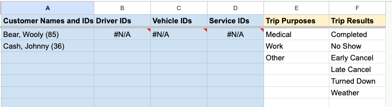

Configuration#
After installing RideSheet, you'll need to configure several settings to match your organization's needs. At minimum, you will need to fill in the Document Properties sheet. You will also likely want to update the default Trip Purposes and Trip Results in the Lookups sheet.
Document Properties#
createRunMode- Either
defaultorauto. Default mode uses theRunsand optionalRun Templatesheets, and requires the user to create runs in advance (also enablingRun OK?functionality). Auto mode will automatically create runs in review when running Move past data to review. Note that if RideSheet is set to auto, you should hide (but not delete) theRunsandRun Templatesheets, since they are unnecessary. defaultStayDuration- The default duration in minutes that a customer will stay at their destination before a return trip; set to -1 to keep the pickup time for new trips blank
driverManifestFolderId- The Google Drive folder ID where newly created driver manifests will be saved
driverManifestTemplateDocId- The Google Doc ID of the template used to generate driver manifests
dropOffToAppointmentTimeInMinutes- How many minutes before an appointment time the customer should be dropped off
dwellTimeInMinutes- The amount of time in minutes allocated for loading/unloading at each stop
Geocoder Bounds
Google Maps will give extra preference to the geocoder bounds when autocompleting or autofilling addresses. However, possible addresses will not be restricted to these bounds, and neither Google nor RideSheet will ensure that addresses fall within the geocoding bounds.
geocoderBoundNeLatitude- The northern latitude boundary for address geocoding
geocoderBoundNeLongitude- The eastern longitude boundary for address geocoding
geocoderBoundSwLatitude- The southern latitude boundary for address geocoding
geocoderBoundSwLongitude- The western longitude boundary for address geocoding
localTimeZone- The time zone used for all date/time calculations (e.g. "America/New_York"); see all timezone codes
logLevel- Sets what type of events are recorded in the
Debug Logsheet; "normal" only logs errors, "verbose" mode will log most events and actions providerName- The name of your organization
runFullReviewRequiredFields- Comma-separated list of fields that must be completed before a run can be archived
runUserReviewRequiredFields- The names of run columns that must have data in them in order for RideSheet to calculate deadhead or other run information.
tripPaddingPerHourInMinutes- Extra time in minutes added per hour of estimated trip duration for traffic/delays
tripReviewCompletedTripResults- Comma-separated list of trip results that count as "completed" for reporting
tripReviewRequiredFields- Comma-separated list of fields that must be completed before a trip can be archived
Lookups#
The Lookups sheet contains items used for filling the dropdown boxes throughout RideSheet. Most columns in this sheet (colored in blue) will automatically populate when you add entries to other sheets:
- Customer names and IDs populate from the
Customerssheet - Driver IDs populate from the
Driverssheet - Vehicle IDs populate from the
Vehiclessheet - Service IDs populate from the
Servicessheet
However, you can and should edit the Trip Purposes and Trip Results columns to reflect the categories of information you want to track for your organization.
 Drivers, vehicles, and services are all missing in this example, and need to be created on their respective sheets in order to show up.
Customization Options#
RideSheet is designed to be customizable to meet different organizations' needs. There are several ways to customize your installation:
- For basic customizations like adding columns or modifying the manifest template, see the User Guide page on customization
- For advanced customizations involving code changes, see the Apps Script page to learn more.
Next Steps
After configuring your RideSheet installation, you can either:
- Learn more about how to use RideSheet to start entering data and managing rides
- Continue to importing data if you want to migrate existing data into your RideSheet installation